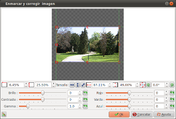

Introducción
La ventana de 'encuadre y
correcciones' permite varias acciones :
- Encuardrar la imagen (seleccionar una parte de la imagen).
- Rotar la imagen (cambiar o restaurar la orientación (vertical/horizontal)).
- Corrección de la imagen (cambiar el color y/o parámetros de exposición).
Los ajustes de la imagen se hace
para cada toma. Esto significa que cada toma tiene su propia
configuración y el movimiento de una toma a otra se define
como una ruta de configuración de pasos una a otra, creando
una animación de toma: se trata de un efecto “Ken
Burns”. Aquí se muestran algunas posibilidades:
- Zoom en una parte de la imagen
- Desplazamiento de una porción de una imagen a otra
- Brillo o el oscurecimiento de una porción de la imagen
- etc...
Decripción del contenido de la ventana
Encuadrar
|  |
El encuadre de una imagen
se define por cinco valores:
|
 La posición horizontal desde la izquierda (X).
Esta posición se expresa con el porcentaje (%)
de la anchura de la imagen.
La posición horizontal desde la izquierda (X).
Esta posición se expresa con el porcentaje (%)
de la anchura de la imagen. La posición vertical desde la parte superior de
la imagen ( Y ). Esta posición se expresa con
el porcentaje (%) de la altura de la imagen.
La posición vertical desde la parte superior de
la imagen ( Y ). Esta posición se expresa con
el porcentaje (%) de la altura de la imagen. La anchura. Este valor lo expresamos con el
porcentaje (%) de la anchura original de la imagen.
La anchura. Este valor lo expresamos con el
porcentaje (%) de la anchura original de la imagen. La altura. Este valor lo expresamos con el
porcentaje (%) de la altura original de la imagen.
La altura. Este valor lo expresamos con el
porcentaje (%) de la altura original de la imagen. El ángulo de rotación en el eje Z. Esta
posición se expresará en grados.
El ángulo de rotación en el eje Z. Esta
posición se expresará en grados.Se pueden utilizar los botones + y - en cada campo para cambiar la configuración, o bien directamente introducir los valores de los cinco parámetros.
Alternativamente, se puede utilizar la zona interactiva para encuadrar la imagen con el ratón o el teclado.
Con el ratón:
- Hacer click en uno de los controladores y manteniendo presionado el botón del ratón, arrastrarlo para modificar el tamaño (para aumentar o reducir la parte de la imagen).
- Hacer click en la imagen que hemos escogido, con el botón del ratón, arrastrarlo para ir a otra zona de la imagen que queremos seleccionar.
- Usar las flechas para mover la parte de la imagen que trabajaremos.
- Usar SHIFT+flechas para mover los controladores de la esquina superior izquierda o CTRL+flechas para mover controlador de la esquina inferior derecha, para cambiar el tamaño de la parte de la imagen que vamos a escoger.
Los botones siguientes ayudarán en el encuadre de la imagen:
 |
Activar o desactivar las guías magnéticas : Cuando las guías están habilitadas,el ratón de forma automática se sentirá atraído por los bordes de la foto, lo que facilita el encuadre. |
 |
Ajustar el encuadre de forma automótica a la anchura de la imagen. Si la la imagen es demasiado alta para el marco, las partes alta y baja se reducirón. |
 |
Ajuste el la elaboración automática de la altura de la imagen. Si el la imagen es demasiado grande para el marco, la derecha y la izquierda partes serán cortadas. |
 |
Ajustar el encuadre de forma automótica a la diagonal de la imagen. El encuadre se ajusta de tal forma que la imagen se ve completamente. |
| Gira la imagen a la izquierda (lo más aproximado a un múltiplo de 90°). | |
 |
Gira la imagen a la derecha (lo más aproximado a un múltiplo de 90°). |
Correción de la imagen
El apartado de corrección de imagen permite iluminar u oscurecer la imagen, usando los siguientes tres valores:- Luminosidad
- Contraste
- Gamma
Por ejemplo:
- Rojo : Reduciendo el componente rojo torna la imagen más amarilla - incrementándolo da como resultado una imagen más azul.
- Verde : Reduciendo el componente verde torna la imagen más roja - incrementándolo da como resultado una imagen más verde
- Azul : Reduciendo el componente verde torna la imagen más roja - incrementándolo da como resultado una imagen más azul
Los resultados dependen de la fuerza inicial de los colores primarios de los componentes originales de la imagen.
Comentario: Para todos los ajustes de corrección, el botón
 permite
reajustar la zona a cero.
permite
reajustar la zona a cero. Consulta también
 WIKIPEDIA |
Efectos
Ken Burns |
© Proyecto ffDiaporama